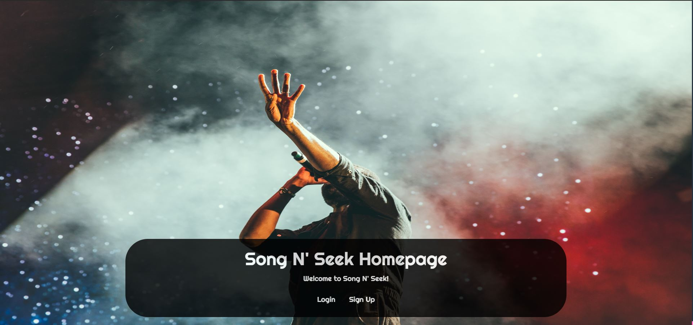
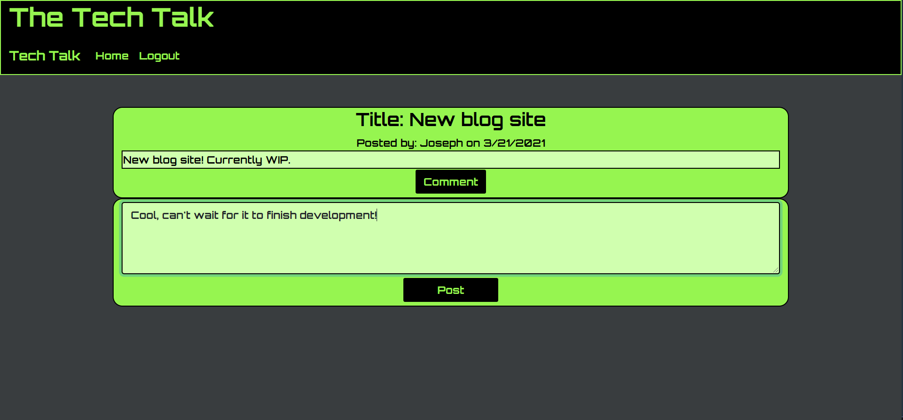
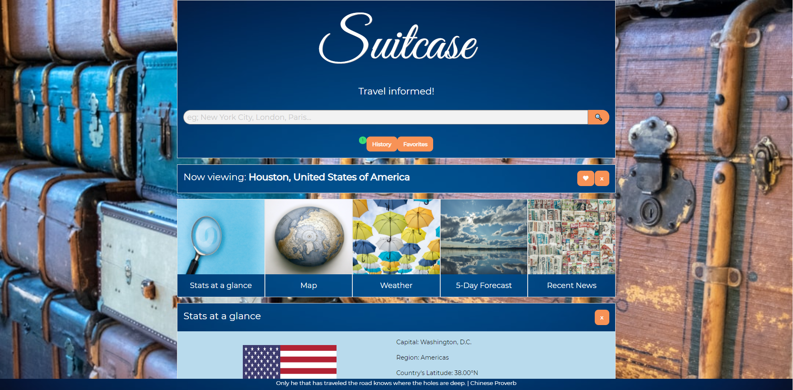

Song N' Seek Web Application
Song N' Seek Deployed Link
Song N' Seek Github Repo

Song N' Seek is the perfect example of user interaction on the client-side to communicate with server-side applications.
Originally meant to be a streaming app like Spotify or Apple Music, this application works as a development project towards something
as great as the aforementioned. Users will create a new account by submitting information such as a username, email, and (encrypted)
password.
Upon user creation, or login if an account exists, the user can search for a songs in the dashboard and will be presented with a list
of options, which is supplied by the Deezer API via GET request. Upon selection, the API information will then be sent to a database (MySQL)
via POST request and the information is stored. At that point, the user can visit the artists, albums, and songs section of the application
to see their results!
This application is a team project that utilizes a full tech stack. Javascript and Jquery is used for logic,
Express.js is used to run the server along with Node.js for package management, MySQL is used for the database
as well as Sequelize for ORM, and the MVC (Model-View-Controller) paradigm was used for content focus. We used Handlebars.js
as our template engine to easily change the content of the application upon user interaction.
Tech Talk Web Application
Tech Talk Deployed Link
Tech Talk Github Repo

The Tech Talk application is an actual webpage that allows users to create a new account or log in to an existing account.
Information provided by the user is stored in MySQL for database relations, which also features encrypted passwords! Upon login
or signup, the user will be taken to a dashboard where they will see all available posts left by other users. Each post can be viewed
individually, and the comments related to the post will also be displayed in future developments; currently a user can post a comment,
but it will not be shown.
This application is a solo project that created from scratch from the ground up. It is my first truly full-stack application that features
both front-end and back-end technologies. What makes this project full-stack is the fact that I used HTML and CSS w/ Bootstrap to create
front end client interfaces, while programming logic with Javascript to send GET/POST requests to a database. Also, this application
hosts a server connection while connecting with MySQL's server to allow back and forth communication with the application. This app
demonstrates the CRUD (Create, Read, Update, and Delete) methodology.
Suitcase Travel Web Application
Suitcase Deployed Link
Suitcase Github Repo

The Suitcase application allows the user to search by city, and is then greeted with a list of cities in other countries.
Upon selection, the user will be able to choose which set of data they would like to see (General stats, the current weather or weather forecast,
a map of the city, and the news). Other features include a persisting history and favorites button, where data is stored for easy retrieval
even upon page refresh. Suitcase features Third-party APIs such as Modern.js, Foundation, Google fonts, and jQuery. We also
utilized Server-side APIs such as GeoDb, REST Countries, OpenWeather, Open Layer in this project.
This is my first team collaborative project, where my team and I worked together in Github
to accomplish this application. We demonstrated teamwork skills, such as pulling and pushing our code to
individual branches, and then creating pull requests and resolving conflicts for reviewal. Once reviewed,
we would approve and merge the code into a Development branch, and once the final product was ready, we pulled
it from development and merged into our production branch.